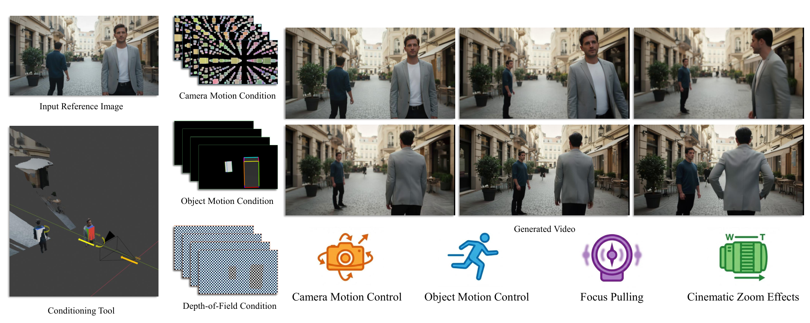
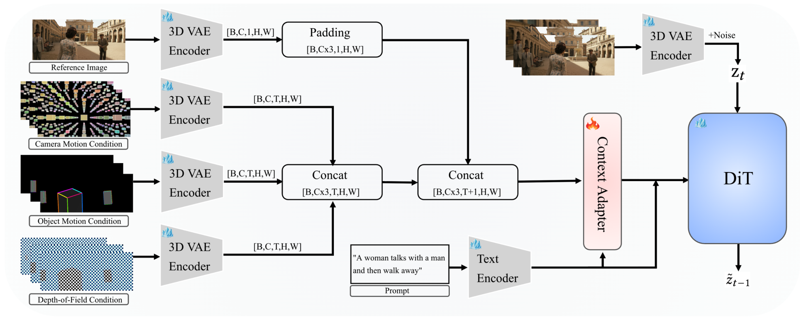
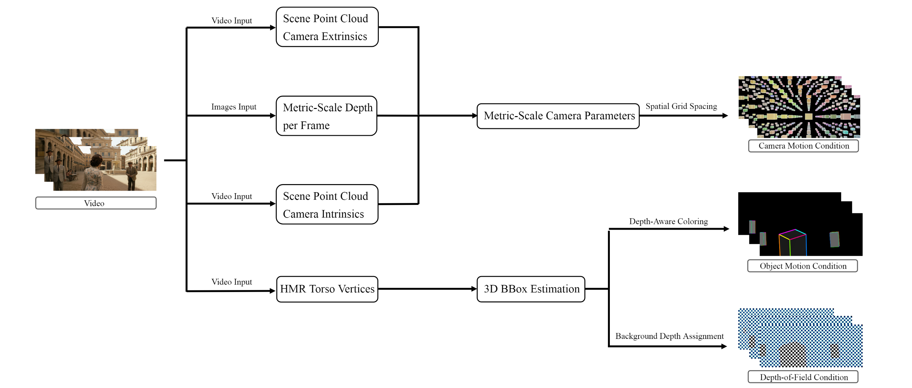
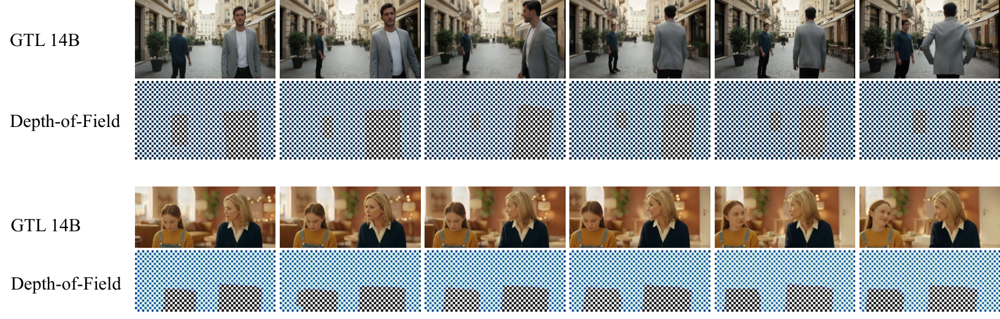
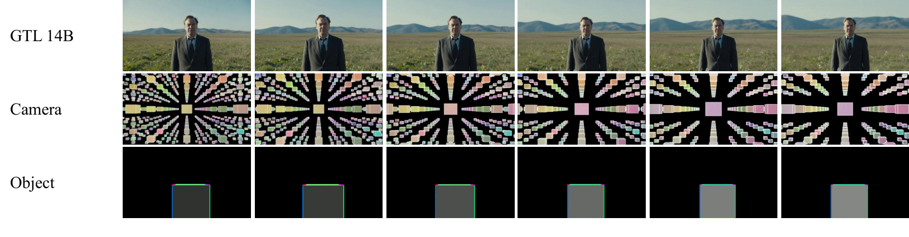

01
Camera space
Intrinsic parameters express focal length, zoom, and optical behavior.
IntrinsicsCamera-Controllable Video Generation via Cross-Coordinate Conditioning Fusion

A concise walkthrough of the method, controllable camera operations, and qualitative results—from coordinate-aware conditioning to the final shot.
Gen Through the Lens is an image-to-video framework for realistic, physically consistent camera operations. It preserves the physical meaning of each control signal instead of compressing every motion cue into one abstract representation.
Intrinsic parameters express focal length, zoom, and optical behavior.
IntrinsicsMetric-scale geometry anchors camera trajectories in a coherent 3D scene.
Extrinsics6D bounding boxes specify object translation, rotation, and screen occupancy.
3D motionGeometry-aware controls are encoded independently, fused by a trainable Context Adapter, and injected into a frozen video diffusion backbone.

The data pipeline recovers consistent camera parameters, human-centered 3D geometry, and depth cues from real video. Those measurements become interpretable conditioning signals for motion and focus.

Dedicated case videos will be added here as the final media is prepared.
Metric-scale translation and rotation with stable scene geometry.
Independent control over 3D translation, rotation, and framing.
Time-varying focal planes and controllable depth-of-field effects.
Coupled camera translation and focal-length changes in a single shot.


Gen Through the Lens turns a single reference frame into video while giving creators direct, physically grounded control of the virtual camera.
The method separates control into three complementary spaces: lens and focal behavior in camera coordinates, metric motion and geometry in world coordinates, and target movement represented by 3D boxes in object coordinates.
A cross-coordinate fusion module brings these signals together, making camera paths, focus transitions, framing, and object motion editable without losing temporal or spatial consistency.
@article{li2026genthroughthelens,
title = {Gen Through the Lens: Camera-Controllable Video
Generation via Cross-Coordinate Conditioning Fusion},
author = {Li, Shuai and Xiang, Jinxu and Li, Xinyuan and
Guo, Hanlei and Tan, Xiyang and Zhao, Alan and
Zhao, Xiaotong and Zhang, Ran},
journal = {arXiv preprint arXiv:2610.15900},
year = {2026}
}